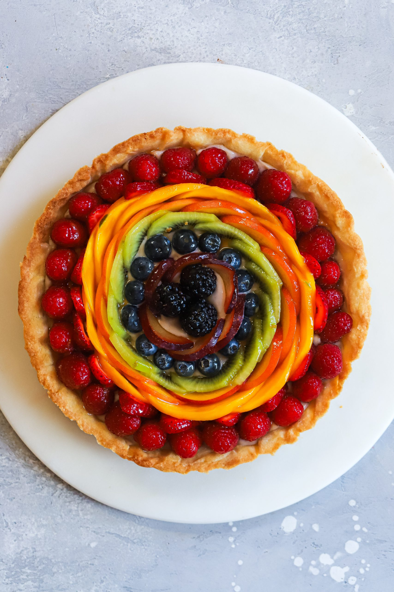

Odin Recipes

The Delicious African Atchaar
This is a delicious African Atchaar that is alkaline and nutricious. It contains
Organic Quinoa grains and wholesome spices to tantilize your taste.
Ingredients of the African Atchaar
- Mongo grains
- Spring Water
- Agave
- Pinch of Salt
Preparation of the African Atchaar
- Pour Quinoa grinded grains in boiling water
- First add a pinch of salt
- Add a teaspoon of Agave
- Stir well until jelly like
Back to Home page